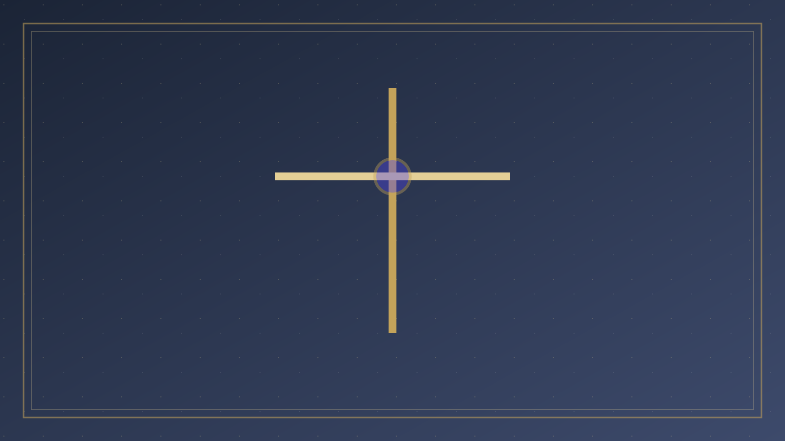
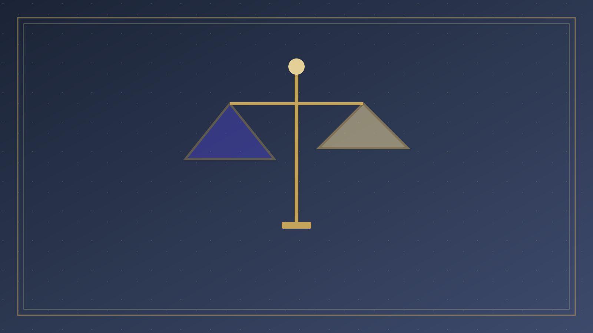
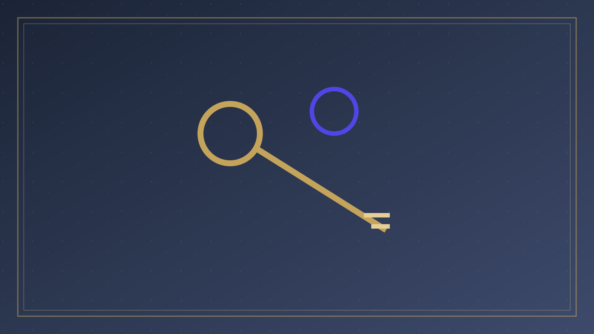

專論總覽
神的自我啟示、成文的道，與試驗一切聲音的責任
本篇已按原有標題拆成可獨立閱讀的分題。請選一題進入；正文未經改寫，只把長頁分開。

01
問題意識
一、問題意識：神的聲音首先是啟示，不是音頻 在華人教會裡，「神對我說」幾乎成了一種屬靈貨幣。

02
舊約與已寫下的律法
二、舊約：神說話與先知職分 舊約從不否認神用異象、夢、先知、烏陵土明，甚至在關鍵時刻以特殊顯現說話。
- 先知職分
- 律法已寫下

03
耶穌是終極的話
四、耶穌是終極的「神的話」 新約沒有把「神說話」取消，而是把它帶到終點。

04
聖靈的工作
五、聖靈的工作：叫人想起耶穌的話，榮耀基督 新約確實強調聖靈引導。

05
試驗諸靈
六、試驗：不要消滅，也不要照單全收 新約最不允許的，是把「屬靈」與「不可檢驗」畫等號。

06
充足與日常引導
七、聖經的充足與功用 已成文的聖經是最高、可公開檢驗的「神的話」。
- 聖經的充足
- 智慧、肢體、環境

07
警告與結論
九、牧養警告：不可妄稱主名 「不可妄稱耶和華你神的名；因為妄稱耶和華名的，耶和華必不以他為無罪。
- 不可妄稱主名
- 辨別的優先序